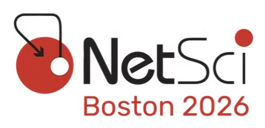

Event Schedule
Venue: TBC
Session I (14:00 - 16:00)
| Time | Title | Speaker | |
|---|---|---|---|
| 14:00 - 14:15 | Opening Remarks |
Carlo V. Cannistraci
Tsinghua University, China
|
Opening |
| 14:15 - 14:45 | Task complexity shapes internal representations and robustness in neural networks |
Santo Fortunato
Indiana University, USA
|
Invited Talk |
| 14:45 - 15:00 | [Title TBC] |
[Speaker TBC]
[Affiliation TBC]
|
Contributed Talk |
| 15:00 - 15:30 | Smarter and Sparser AI with Complex Network Science |
Rebekka Burkholz
Helmholtz Center CISPA, Germany
|
Invited Talk |
| 15:30 - 15:45 | [Title TBC] |
[Speaker TBC]
[Affiliation TBC]
|
Contributed Talk |
| 15:45 - 16:00 | [Title TBC] |
[Speaker TBC]
[Affiliation TBC]
|
Contributed Talk |
Coffee Break (16:00 - 16:30)
Session II (16:30 - 18:30)
| Time | Title | Speaker | |
|---|---|---|---|
| 16:30 - 17:00 | A Machine Learning Approach to Dismantling Complex Networks |
Giuseppe Mangioni
University of Catania, Italy
|
Invited Talk |
| 17:00 - 17:15 | [Title TBC] |
[Speaker TBC]
[Affiliation TBC]
|
Contributed Talk |
| 17:15 - 17:45 | [Title TBC] |
Demba Ba (TBC)
Harvard University, USA
|
Invited Talk |
| 17:45 - 18:00 | [Title TBC] |
[Speaker TBC]
[Affiliation TBC]
|
Contributed Talk |
| 18:00 - 18:30 | Beyond Euclid: an illustrated guide to modern machine learning with geometric, topological, and algebraic structures |
Nina Miolane
UC Santa Barbara, USA
|
Invited Talk |

